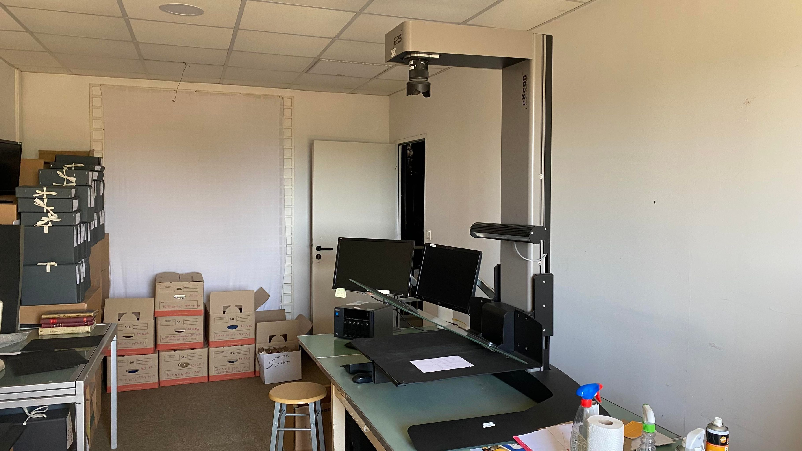
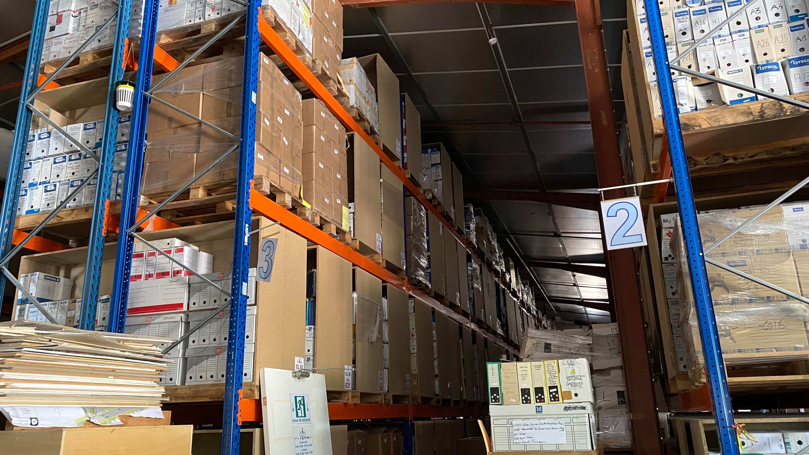
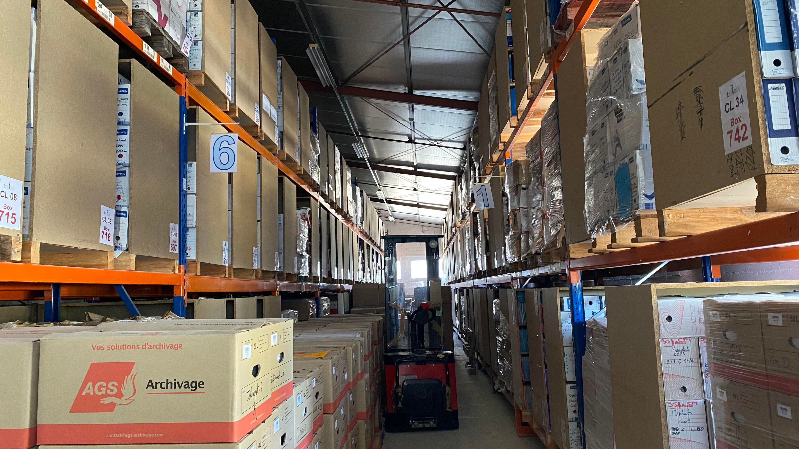

Archi'Mède est une entreprise d'insertion qui forme son personnel aux
techniques d'archivage physique et numérique afin de valoriser leurs compétences
pour leur permettre un accès pérenne à l'emploi.
Archi'Mède est aujourd'hui une SCOP.
L'équipe d'Archi'mède est composée de spécialistes dans les domaines suivants :
- Archivage et gestion des documents papiers
- Sécurité des locaux d'archivage
- Insertion
- Gestion d'entreprise
- Réseaux informatique professionnels
- T.I.C (techniques de l'information et de la communication), A.E (archivage électronique), G.E.D (gestion électronique de documents), Workflow (gestion des processus d'entreprise), EDM (gestion des documents d'entreprise)
- Organisation du travail
- Relation clientèle
Archi-Mède sait traiter votre problématique d'archivage quelle que soit la nature des documents, numérique ou physique, durant tout leur cycle de vie jusqu'à leur éventuelle destruction confidentielle.
- Sécuriser vos documents pendant leur durée légale de conservation
- Pouvoir y accéder de façon ponctuelle
- Accéder facilement et rapidement à vos dossiers indispensables à votre activité quotidienne
- Assurer la pérennité et la confidentialité de vos documents à caractère sensible ou critique pour la continuité de votre activité
- Numériser vos documents papier ET POUVOIR LES CONSULTER VIA INTERNET
- Vous débarasser de vos radiographies sans polluer la planète
- préparation de vos documents : tri, conditionnement en conteneurs, référencement
- référencefement informatique : pouvoir accéder facilement et rapidement à vos documents sous forme physique ou numérique
- conservation dans des entrepôts dédiés et sécurisés de vos documents pendant la durée reglementaire
- numérisation et consultation en ligne de vos documents
- destruction de vos documents selon vos instructions
- collecte de vos radiographies